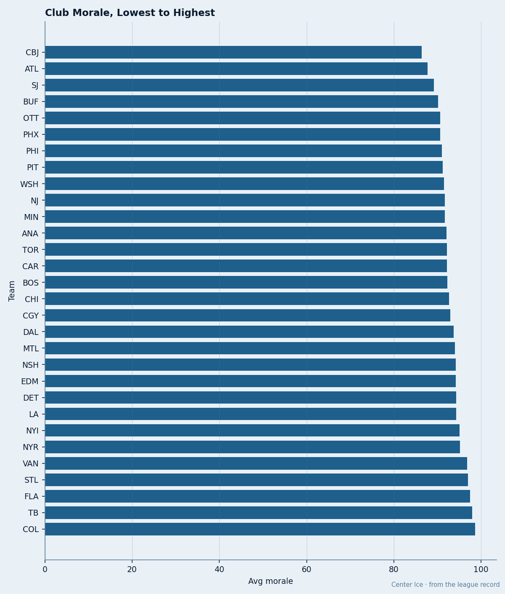
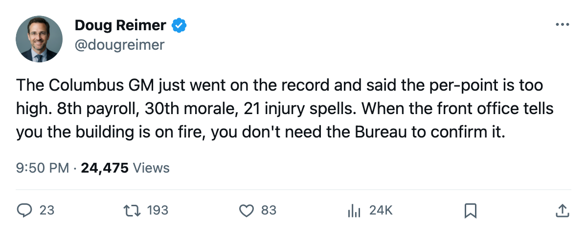
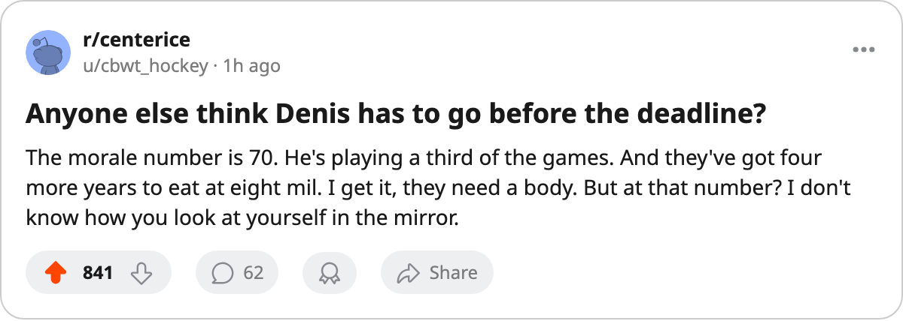

85.6 Morale, $62.03M, 21 Spells: The Columbus GM Is Saying It Out Loud and Nobody on the Roster Can Disagree
The lowest room in hockey has the 8th-highest payroll, a $8.12M goaltender at 70 morale, and a center out with a knee until January 30.
 Doug ReimerAnalytics editor, ex-video coach · The Slot Report
Doug ReimerAnalytics editor, ex-video coach · The Slot Report
 Columbus Blue Jackets sit at the bottom of the Bureau's Morale Scale with a club average of 85.6.
Columbus Blue Jackets sit at the bottom of the Bureau's Morale Scale with a club average of 85.6.  Colorado Avalanche top the scale at 98.4. The 2nd-lowest club is
Colorado Avalanche top the scale at 98.4. The 2nd-lowest club is  Atlanta Thrashers at 87.6. No team is within 10 points of the gap between CBJ and the team above them.
Atlanta Thrashers at 87.6. No team is within 10 points of the gap between CBJ and the team above them.
They also have the 8th-highest payroll in the league at $62.03M, 25 points through 23 games, and a cost per point of $2.48M. Their GM, Brent O'Connor, told The Tunnel's Marcus Bell this week: "The per point is too high. That tells me I'm not getting value out of the roster I've built or the rooms I'm running."
The sheet shows him right.
The goaltender split
 Marc Denis86 carries 70 morale, the lowest single number on the entire Morale Scale. He has played 7 of the club's 23 games (30% of the workload), carries an $8.12M salary with 4 years left on the deal, and has a Book grade of 85.
Marc Denis86 carries 70 morale, the lowest single number on the entire Morale Scale. He has played 7 of the club's 23 games (30% of the workload), carries an $8.12M salary with 4 years left on the deal, and has a Book grade of 85.
Across from him,  Pascal Leclaire89 has played 15 of 23 (65%), carries an 87 grade, and a $1.10M salary with 0 years left. Leclaire sits 14th among the Dev Index's risers at +9 form. Denis sits nowhere on the Index.
Pascal Leclaire89 has played 15 of 23 (65%), carries an 87 grade, and a $1.10M salary with 0 years left. Leclaire sits 14th among the Dev Index's risers at +9 form. Denis sits nowhere on the Index.
The club pays more than seven times the starter's salary to the man who plays a third of the games.

The injury load
Columbus Blue Jackets have logged 21 injury spells and 106 days lost. No other club has more than 21 spells this season;  Pittsburgh Penguins and
Pittsburgh Penguins and  Calgary Flames match them at 21. Columbus rank 7th by days lost.
Calgary Flames match them at 21. Columbus rank 7th by days lost.
O'Connor said it on The Tunnel: " Todd Marchant80 is out till January 30 with the knee. Joe Juneau till the 28th with the hand. That's two centers the coach doesn't have. I've got three guys on the shelf this week and that thins the middle."
Todd Marchant80 is out till January 30 with the knee. Joe Juneau till the 28th with the hand. That's two centers the coach doesn't have. I've got three guys on the shelf this week and that thins the middle."
Todd Marchant carries a knee, out until 2006-01-30. This is his 3rd spell of the season.
The one producing
 Geoff Sanderson82 has 25 points in 23 games at a pace of 89, a Book grade of 80, and 23.0 minutes a night. O'Connor said on The Tunnel: "He's scoring. That's real."
Geoff Sanderson82 has 25 points in 23 games at a pace of 89, a Book grade of 80, and 23.0 minutes a night. O'Connor said on The Tunnel: "He's scoring. That's real."
Tyler Wright76 is the other name on the Morale Scale's 15 lowest: 78 morale, a 75 grade, $0.80M, 0 years left, 11 points in 23 games at 14.4 minutes a night. He and Sanderson are the two CBJ skaters whose numbers the GM named in the same breath.
What the money is doing
| player | overall | morale | salary | contract_yrs | gp | pts | mpg |
|---|---|---|---|---|---|---|---|
| Marc Denis | 85 | 70 | $8.12M | 4 | 7 | 65.0 | |
| Pascal Leclaire | 87 | $1.10M | 0 | 15 | |||
| Geoff Sanderson | 80 | 23 | 25 | 23.0 | |||
| Tyler Wright | 75 | 78 | $0.80M | 0 | 23 | 11 | 14.4 |
Three of the four carry 0 or fewer contract years on record. Leclaire walks in June unless someone extends him. He is 23, on the Index at +9, and costing $1.10M. The man replacing his workload costs $8.12M with four years left.
The standings say
Columbus Blue Jackets sit 9th in the West with 25 points in 23 games, exactly even with 8th-place  Vancouver Canucks on points and games played. The gap to 10th is 1 point. They are in the middle of the pack by the table and at the bottom by every other measure the Bureau publishes.
Vancouver Canucks on points and games played. The gap to 10th is 1 point. They are in the middle of the pack by the table and at the bottom by every other measure the Bureau publishes.
The payroll ranks 8th, cost per point 13th among 30 clubs, morale 30th, and injuries 7th by days lost. The one number pointing forward is Leclaire's +9 on the Development Index.
The trade deadline is 108 days away. A room at 85.6 with a $8.12M backup on a 4-year deal is a room that cannot hold a rising 23-year-old at $1.10M through the spring unless someone moves money.

